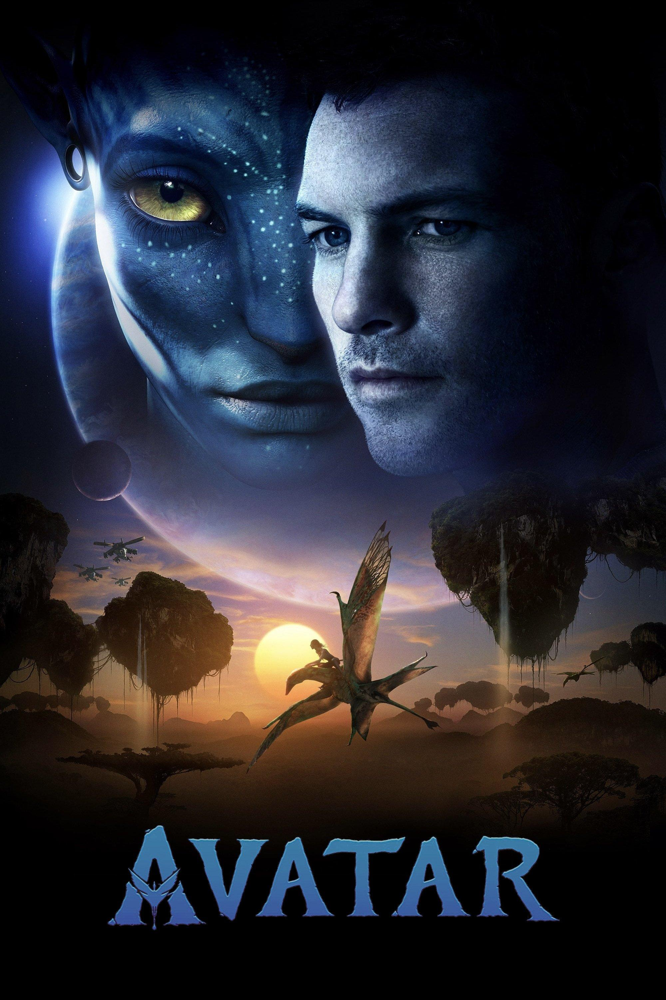
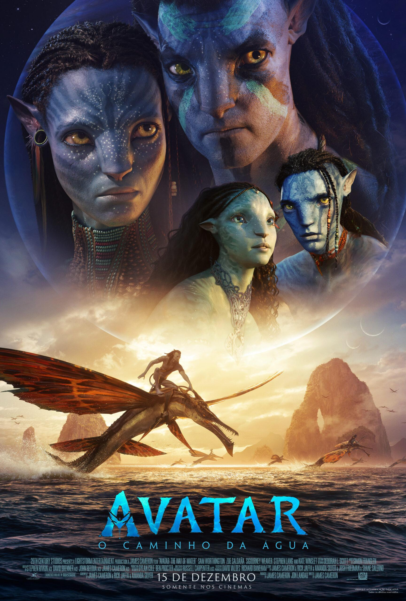
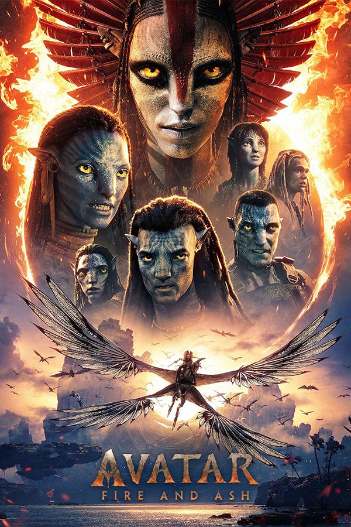

A jornada de Pandora, dos Na'vi e da família Sully através dos filmes.

No futuro, os humanos chegam a Pandora em busca de um minério valioso chamado Unobtanium. Para se aproximar dos Na'vi, eles criam corpos híbridos chamados Avatares.
Jake Sully, um ex-fuzileiro, entra no programa Avatar e conhece Neytiri. Aos poucos, ele aprende a cultura dos Na'vi e percebe que Pandora não é apenas um lugar a ser explorado, mas um mundo vivo e sagrado.
Quando os humanos ameaçam destruir o lar dos Omaticaya, Jake escolhe lutar ao lado dos Na'vi e se torna um verdadeiro defensor de Pandora.

Anos depois, Jake e Neytiri vivem em Pandora com seus filhos. A paz é quebrada quando os humanos retornam, trazendo de volta uma nova versão do Coronel Quaritch.
Para proteger sua família, Jake deixa a floresta e busca abrigo entre os Metkayina, um povo Na'vi que vive nos oceanos.
A família Sully precisa aprender uma nova forma de viver, ligada ao mar, enquanto enfrenta perdas, perigos e uma guerra cada vez maior.

A história continua mostrando novas regiões de Pandora e novos clãs Na'vi. Depois da perda de Neteyam, a família Sully precisa lidar com o luto e com novos conflitos.
O filme apresenta o Povo das Cinzas, um grupo com uma visão diferente sobre Pandora, Eywa e os outros Na'vi.
A guerra se torna mais complexa, mostrando que Pandora possui culturas, escolhas e conflitos muito maiores do que Jake imaginava.